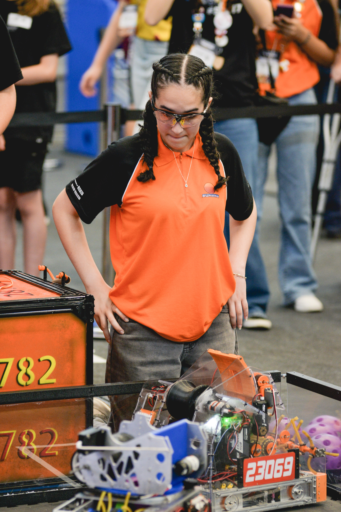
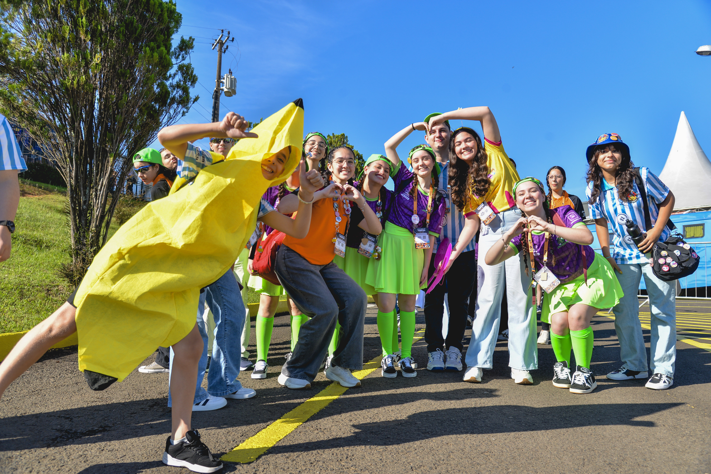
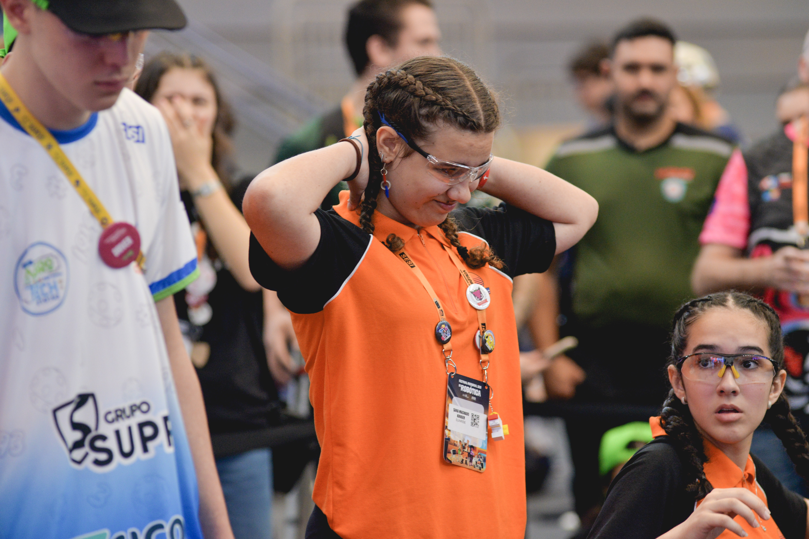
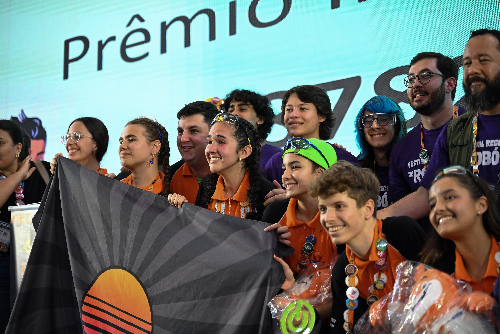
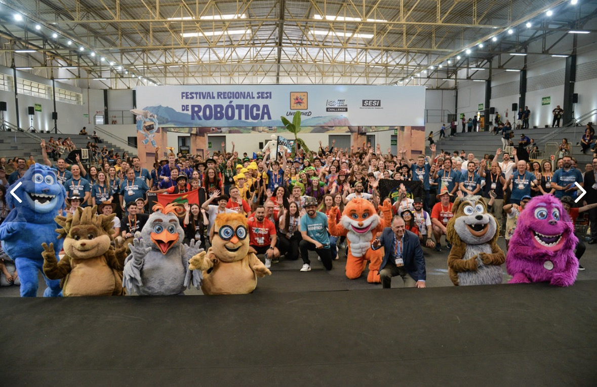

Sobre a equipe
A SUNRISE #28782 é uma equipe de robótica da modalidade FIRST Tech Challenge (FTC), vinculada ao SESI SENAI SC em Joinville, Santa Catarina, que estreou nas competições em 2024.
Formada por estudantes dedicados à engenharia, construção e programação de robôs, a equipe atua em partidas em aliança e promove os valores FIRST de cooperação, inovação e Gracious Professionalism.
Temporadas e conquistas
- 2025 — DECODE:estreia da equipe e conquista do 2º lugar no Inspire Award na Seletiva Catarinense, garantindo vaga para etapas nacionais.
- Torneios regionais e amistosos: participação no Off-Season Das Araucárias e no Sinos Valley Challenge.
- 2026 — BIOBUZZ: continuidade do projeto com foco em evolução técnica e impacto na comunidade.
Galeria da equipe
Registros do robô, dos testes em arena e da participação da equipe nas competições.





Simulador de pontuação FTC
Calcule o desempenho da partida somando os pontos dos períodos Autônomo, Teleoperado e Endgame para obter a pontuação total e a classificação da partida.